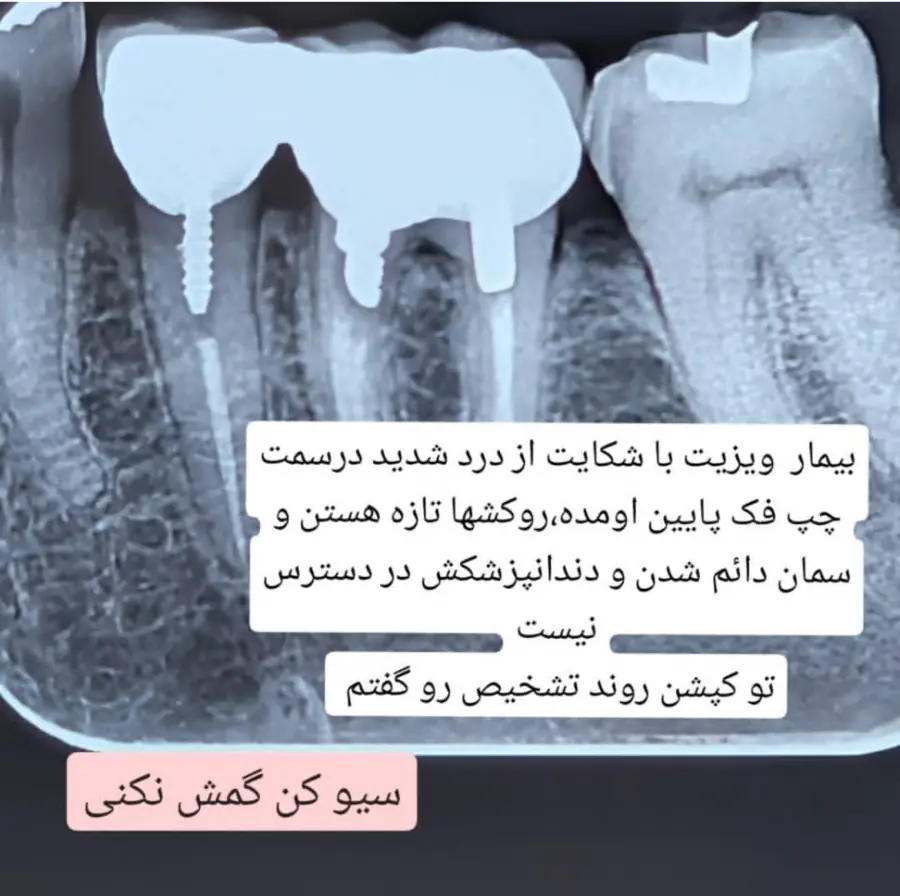
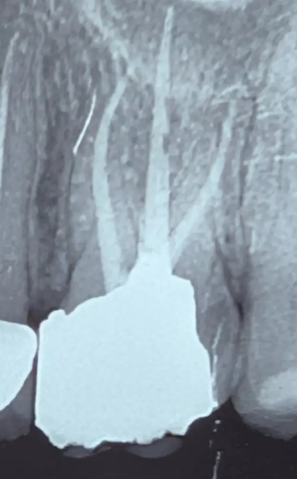

نسخه استخراجشده؛ ترجمه یا تأیید علمی انجام نشده است. وضعیت: captured
بیمار با درد شدید در سمت چپ فک پایین آمده است. روکشها تازهاند و با سمان دائم چسبانده شدهاند و دندانپزشکی که آنها را ساخته در دسترس نیست. دندان ۶ درگیری فورکا دارد. درد از کجاست؟

بهجای حدس زدن، درد را بازسازی کن: هر محرک محتمل را جداگانه امتحان کن تا ببینی کدامیک عیناً همان درد بیمار را برمیگرداند.
پس منشأ درد کانتکت باز میان ۴ و ۵ است، نه فورکای ۶. درد شدید پس از تحویل روکش لزوماً از خود دندان روکششده یا از یک یافتهی آشکار نمیآید، و یافتهی چشمگیری مثل درگیری فورکا نباید بررسی کانتکتها را کنار بگذارد.
این روکشها کار خودت نیستند. هر دستکاری در کار درمانگر دیگر، از شکستن پرسلن تا مسئولیت نتیجهای که خودت نساختهای، تبعات بعدی دارد؛ این ملاحظه بخشی از خود تصمیم درمانی است و انتخاب میان دو راه باید با در نظر گرفتن آن انجام شود.
بیمار دیگری از درد مبهم بیندندانی در مزیال دندان ۶ بالا سمت چپ شکایت دارد. کانتکت بسته است و عبور نخ دندان درد را بازسازی نمیکند.

این دو یافتهی سادهی معاینه فرضیهی اول را حذف میکنند: با کانتکت بسته و نخ منفی، گیر غذایی فعال یا باز بودن کانتکت علت اصلی نیست. باید عمیقتر نگاه کنی: به کانتور ترمیم و رابطهاش با استخوان.
چنین دردی الزاماً از پوسیدگی یا مشکل اندودنتیک نیست؛ کانتور نادرست و نزدیکی بیش از حد ترمیم به استخوان خودش التهاب مزمن و ناراحتی مبهم میسازد.
در ترمیم پروگزیمال، بستن کانتکت کافی نیست؛ کانتور صحیح و احترام به بیولوژیک ویدث به همان اندازه در سلامت بافتهای اطراف دندان نقش دارند.